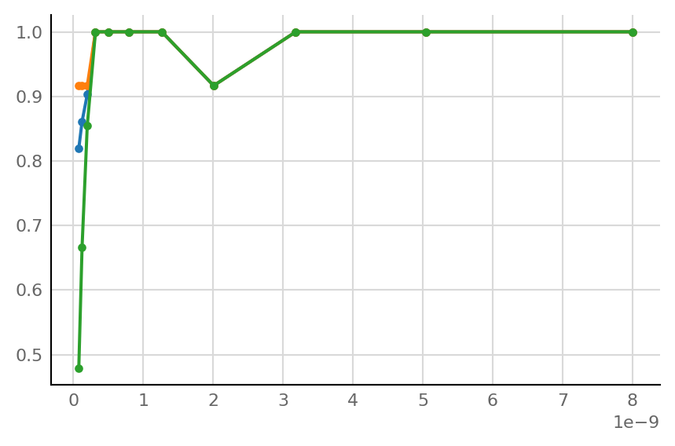
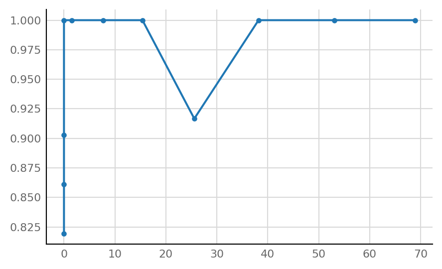
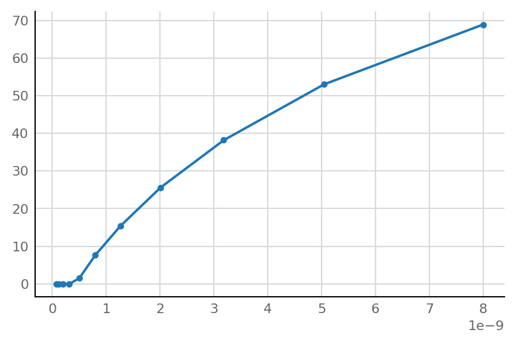

2021-11-04 • Control for output spike rate
Contents
2021-11-04 • Control for output spike rate¶
We start by wanting a plot with output spike rate on the x-axis.
Prelude¶
from voltage_to_wiring_sim.notebook_init import *
Preloading: numpy, numba, matplotlib.pyplot, seaborn.
Importing from submodules … ✔
Imported `np`, `mpl`, `plt`, `sns`, `pd`
Imported codebase (`voltage_to_wiring_sim`) as `v`
Imported `*` from `v.support.units`
Setup autoreload
v.print_reproducibility_info()
This cell was last run by lpxtf3 on DUIP74576 on Thu 04 Nov 2021, at 17:24 (UTC+0000).
Last git commit (Thu 04 Nov 2021, 16:37).
Uncommited changes to 4 files.
Output rate vs performance¶
from voltage_to_wiring_sim.experiments.N_to_1_IE import Params, simulate_and_test_connections, eval_performance
base_params = Params(p_inhibitory=0.2)
v.pprint(base_params)
Params
------
sim_duration = 600
timestep = 0.0001
spike_rate = 20
Δg_syn = 8E-10
τ_syn = 0.007
neuron_params = {'C': 1e-10, 'a': 30.0, 'b': -2e-09, 'c': -0.05, ...}
imaging_spike_SNR = 20
v_syn_E = 0
v_syn_I = -0.07
num_spike_trains = 30
p_inhibitory = 0.2
p_connected = 0.6
window_duration = 0.1
rng_seed = 0
@v.cache_to_disk("2021-11-04__control_for_output_rate")
def sim_test_eval(params: Params):
sim_data, _, test_summaries = simulate_and_test_connections(params)
evalu_p_0_05, _, AUC, AUC_exc, AUC_inh = eval_performance(sim_data, test_summaries)
output_spike_rate = sim_data.izh_output.spike_times.size / params.sim_duration
return (output_spike_rate,
evalu_p_0_05.TPR, evalu_p_0_05.TPR_exc, evalu_p_0_05.TPR_inh,
AUC, AUC_exc, AUC_inh)
dgsyns = 0.8 * nS * np.logspace(-1, 1, num=11);
from dataclasses import replace
from joblib import Parallel, delayed
%%time
results = Parallel(n_jobs=-1)(delayed(sim_test_eval)(replace(base_params, Δg_syn=dg)) for dg in dgsyns);
3m49 without joblib parallel,
[1m26, 1m15] with.
1m14 with numba.set_num_threads(2) in addition.
(output_spike_rate,
TPR, TPR_exc, TPR_inh,
AUC, AUC_exc, AUC_inh) = zip(*results)
plt.plot(dgsyns, AUC, ".-");
plt.plot(dgsyns, AUC_exc, ".-");
plt.plot(dgsyns, AUC_inh, ".-");

plt.plot(output_spike_rate, AUC, ".-");

plt.plot(dgsyns, output_spike_rate, ".-");

To explore signals¶
sim_and_test = v.cache_to_disk(simulate_and_test_connections);
d, td, ts = sim_and_test(base_params);
Reproducibility¶
v.print_reproducibility_info(verbose=True)
This cell was last run by lpxtf3 on DUIP74576
on Thu 28 Oct 2021, at 15:09 (UTC+0100).
Last git commit (Thu 28 Oct 2021, 14:11).
Uncommited changes to:
M notebooks/2021-09-16__vary_E_vs_I.ipynb
Platform:
Windows-10
CPython 3.9.6 (C:\miniforge3\python.exe)
Intel(R) Xeon(R) W-2123 CPU @ 3.60GHz
Dependencies of voltage_to_wiring_sim and their installed versions:
numpy 1.21.1
matplotlib 3.4.2
numba 0.53.1
joblib 1.0.1
seaborn 0.11.1
scipy 1.7.0
preload 2.2
nptyping 1.4.2
Full conda list:
# packages in environment at C:\miniforge3:
#
# Name Version Build Channel
argon2-cffi 20.1.0 py39hb82d6ee_2 conda-forge
async_generator 1.10 py_0 conda-forge
attrs 21.2.0 pyhd8ed1ab_0 conda-forge
backcall 0.2.0 pyh9f0ad1d_0 conda-forge
backports 1.0 py_2 conda-forge
backports.functools_lru_cache 1.6.4 pyhd8ed1ab_0 conda-forge
bleach 3.3.1 pyhd8ed1ab_0 conda-forge
brotlipy 0.7.0 py39hb82d6ee_1001 conda-forge
ca-certificates 2019.11.28 hecc5488_0 conda-forge/label/cf202003
certifi 2021.10.8 py39hcbf5309_0 conda-forge
cffi 1.14.6 py39h0878f49_0 conda-forge
chardet 4.0.0 py39hcbf5309_1 conda-forge
charset-normalizer 2.0.0 pyhd8ed1ab_0 conda-forge
click 7.1.2 pypi_0 pypi
colorama 0.4.4 pyh9f0ad1d_0 conda-forge
conda 4.10.3 py39hcbf5309_2 conda-forge
conda-package-handling 1.7.3 py39hb3671d1_0 conda-forge
cryptography 3.4.7 py39hd8d06c1_0 conda-forge
cycler 0.10.0 pypi_0 pypi
debugpy 1.4.1 py39h415ef7b_0 conda-forge
decorator 5.0.9 pyhd8ed1ab_0 conda-forge
defusedxml 0.7.1 pyhd8ed1ab_0 conda-forge
entrypoints 0.3 pyhd8ed1ab_1003 conda-forge
icu 68.2 h0e60522_0 conda-forge
idna 3.1 pyhd3deb0d_0 conda-forge
importlib-metadata 4.6.1 py39hcbf5309_0 conda-forge
ipykernel 6.0.3 py39h832f523_0 conda-forge
ipython 7.25.0 py39h832f523_1 conda-forge
ipython_genutils 0.2.0 py_1 conda-forge
jedi 0.18.0 py39hcbf5309_2 conda-forge
jinja2 3.0.1 pyhd8ed1ab_0 conda-forge
joblib 1.0.1 pypi_0 pypi
jpeg 9d h8ffe710_0 conda-forge
jsonschema 3.2.0 pyhd8ed1ab_3 conda-forge
jupyter_client 6.1.12 pyhd8ed1ab_0 conda-forge
jupyter_contrib_core 0.3.3 py_2 conda-forge
jupyter_contrib_nbextensions 0.5.1 pyhd8ed1ab_2 conda-forge
jupyter_core 4.7.1 py39hcbf5309_0 conda-forge
jupyter_highlight_selected_word 0.2.0 py39hcbf5309_1002 conda-forge
jupyter_latex_envs 1.4.6 pyhd8ed1ab_1002 conda-forge
jupyter_nbextensions_configurator 0.4.1 py39hcbf5309_2 conda-forge
jupyterlab_pygments 0.1.2 pyh9f0ad1d_0 conda-forge
jupytray 0.7 pypi_0 pypi
kiwisolver 1.3.1 pypi_0 pypi
libclang 11.1.0 default_h5c34c98_1 conda-forge
libiconv 1.16 he774522_0 conda-forge
libpng 1.6.37 h1d00b33_2 conda-forge
libsodium 1.0.18 h8d14728_1 conda-forge
libxml2 2.9.12 hf5bbc77_0 conda-forge
libxslt 1.1.33 h65864e5_2 conda-forge
libzlib 1.2.11 h8ffe710_1013 conda-forge
llvmlite 0.36.0 pypi_0 pypi
lxml 4.6.3 py39h4fd7cdf_0 conda-forge
markupsafe 2.0.1 py39hb82d6ee_0 conda-forge
matplotlib 3.4.2 pypi_0 pypi
matplotlib-inline 0.1.2 pyhd8ed1ab_2 conda-forge
menuinst 1.4.17 py39hcbf5309_1 conda-forge
miniforge_console_shortcut 2.0 h57928b3_0 conda-forge
mistune 0.8.4 py39hb82d6ee_1004 conda-forge
nbclient 0.5.3 pyhd8ed1ab_0 conda-forge
nbconvert 6.1.0 py39hcbf5309_0 conda-forge
nbformat 5.1.3 pyhd8ed1ab_0 conda-forge
nest-asyncio 1.5.1 pyhd8ed1ab_0 conda-forge
notebook 6.4.0 pyha770c72_0 conda-forge
nptyping 1.4.2 pypi_0 pypi
numba 0.53.1 pypi_0 pypi
numpy 1.21.1 pypi_0 pypi
openssl 1.1.1l h8ffe710_0 conda-forge
packaging 21.0 pyhd8ed1ab_0 conda-forge
pandas 1.3.1 pypi_0 pypi
pandoc 2.14.1 h8ffe710_0 conda-forge
pandocfilters 1.4.2 py_1 conda-forge
parso 0.8.2 pyhd8ed1ab_0 conda-forge
pickleshare 0.7.5 py_1003 conda-forge
pillow 8.3.1 pypi_0 pypi
pip 21.2.1 pyhd8ed1ab_0 conda-forge
preload 2.2 pypi_0 pypi
prometheus_client 0.11.0 pyhd8ed1ab_0 conda-forge
prompt-toolkit 3.0.19 pyha770c72_0 conda-forge
pycosat 0.6.3 py39hb82d6ee_1006 conda-forge
pycparser 2.20 pyh9f0ad1d_2 conda-forge
pygments 2.9.0 pyhd8ed1ab_0 conda-forge
pyopenssl 20.0.1 pyhd8ed1ab_0 conda-forge
pyparsing 2.4.7 pyh9f0ad1d_0 conda-forge
pyqt 5.12.3 py39hcbf5309_7 conda-forge
pyqt-impl 5.12.3 py39h415ef7b_7 conda-forge
pyqt5-sip 4.19.18 py39h415ef7b_7 conda-forge
pyqtchart 5.12 py39h415ef7b_7 conda-forge
pyqtwebengine 5.12.1 py39h415ef7b_7 conda-forge
pyrsistent 0.17.3 py39hb82d6ee_2 conda-forge
pysocks 1.7.1 py39hcbf5309_3 conda-forge
python 3.9.6 h7840368_1_cpython conda-forge
python-dateutil 2.8.2 pyhd8ed1ab_0 conda-forge
python_abi 3.9 2_cp39 conda-forge
pytz 2021.1 pypi_0 pypi
pywin32 300 py39hb82d6ee_0 conda-forge
pywinpty 1.1.3 py39h99910a6_0 conda-forge
pyyaml 6.0 py39hb82d6ee_0 conda-forge
pyzmq 22.1.0 py39he46f08e_0 conda-forge
qt 5.12.9 h5909a2a_4 conda-forge
requests 2.26.0 pyhd8ed1ab_0 conda-forge
ruamel_yaml 0.15.80 py39hb82d6ee_1004 conda-forge
scipy 1.7.0 pypi_0 pypi
seaborn 0.11.1 pypi_0 pypi
send2trash 1.7.1 pyhd8ed1ab_0 conda-forge
setuptools 49.6.0 py39hcbf5309_3 conda-forge
six 1.16.0 pyh6c4a22f_0 conda-forge
sqlite 3.36.0 h8ffe710_0 conda-forge
terminado 0.10.1 py39hcbf5309_0 conda-forge
testpath 0.5.0 pyhd8ed1ab_0 conda-forge
tornado 6.1 py39hb82d6ee_1 conda-forge
tqdm 4.61.2 pyhd8ed1ab_1 conda-forge
traitlets 5.0.5 py_0 conda-forge
typish 1.9.2 pypi_0 pypi
tzdata 2021a he74cb21_1 conda-forge
ucrt 10.0.20348.0 h57928b3_0 conda-forge
urllib3 1.26.6 pyhd8ed1ab_0 conda-forge
vc 14.2 hb210afc_5 conda-forge
voltage-to-wiring-sim 0.1 dev_0 <develop>
vs2015_runtime 14.29.30037 h902a5da_5 conda-forge
wcwidth 0.2.5 pyh9f0ad1d_2 conda-forge
webencodings 0.5.1 py_1 conda-forge
wheel 0.36.2 pyhd3deb0d_0 conda-forge
win_inet_pton 1.1.0 py39hcbf5309_2 conda-forge
wincertstore 0.2 py39hcbf5309_1006 conda-forge
winpty 0.4.3 4 conda-forge
winshell 0.6 pypi_0 pypi
yaml 0.2.5 he774522_0 conda-forge
zeromq 4.3.4 h0e60522_0 conda-forge
zipp 3.5.0 pyhd8ed1ab_0 conda-forge
zlib 1.2.11 h8ffe710_1013 conda-forge